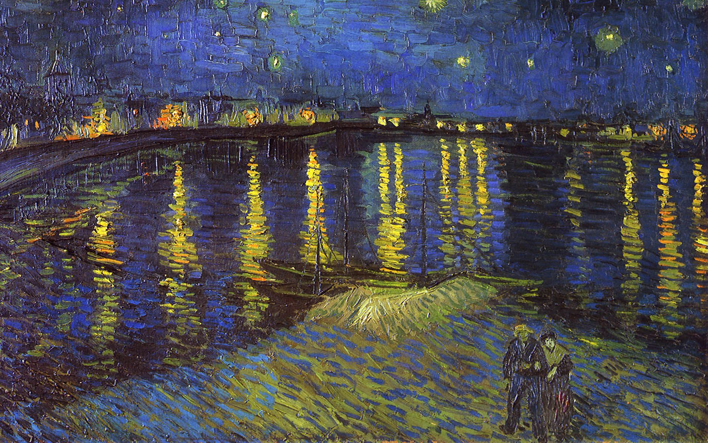

Sobre o Site

Esse site tem por foco o objetivo de me promover e mostrar o que eu sei.
Os principais pontos são os pontos quem que eu mais em identifico.
E esse parágrafo só existe por que eu tinha que colocar 3
Onde foi tirada a foto acima ?
O Foto acima, foi tirada no Aterro no Flamengo, no local abaixo !
Destaques
- Basquete
- Livros
- Estudos
- Contato